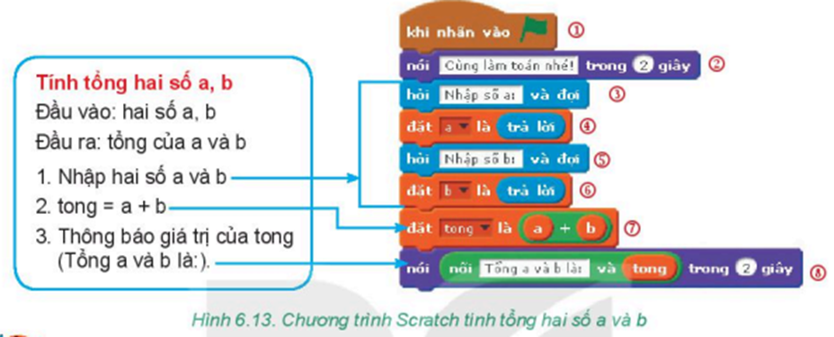
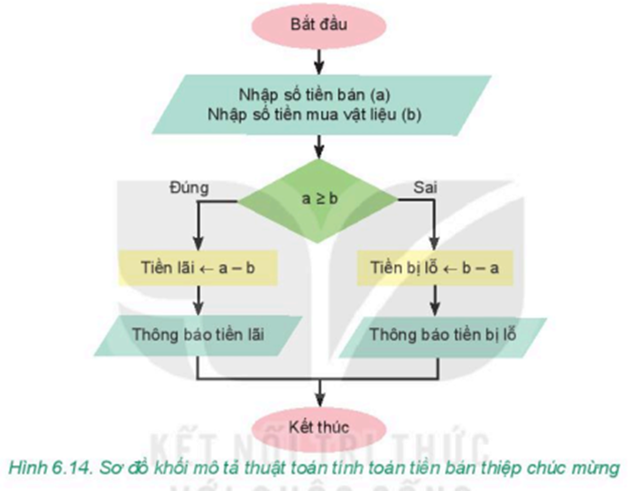
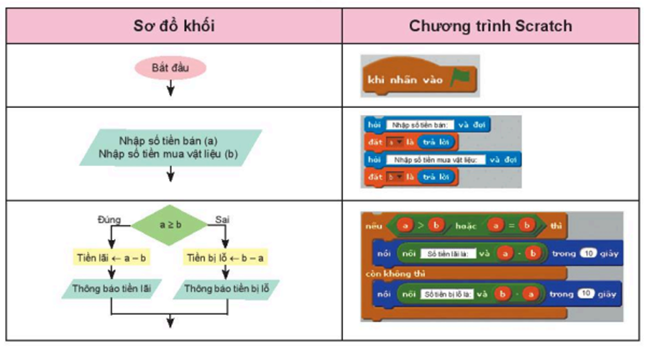

- Ngôn ngữ lập trình chính là ngôn ngữ được dùng để tạo ra chương trình chỉ dẫn cho máy tính hiểu cách thực hiện công việc.
- Chương trình là tập hợp các lệnh viết bằng ngôn ngữ lập trình nào đó, chỉ dẫn theo từng bước của thuật toán để máy tính thực hiện. Nói cách khác, chương trình là một cách mô tả khác của thuật toán để máy tính có thể “hiểu” và thực hiện được.
- Chương trình máy tính dựa trên các dữ liệu đầu vào, tiến hành các bước xử lí để trả lại kết quả đầu ra.
- Scratch là ngôn ngữ lập trình trực quan em đã được học ở Tiểu học.
Ví dụ dưới đây là chương trình chỉ dẫn máy tính thực hiện công việc tính tổng hai số a và b bằng ngôn ngữ lập trình trực quan Scratch:
→ Máy tính thực hiện công việc theo chương trình.
→ Chương trình là mô tả thuật toán để máy tính “hiểu” và thực hiện được.
→ Chương trình dựa trên các dữ liệu đầu vào, tiến hành các bước xử lí để trả lại kết quả đầu ra.
Nhiệm vụ: Ba bạn An, Minh, Khoa đã làm những tấm thiệp chúc mừng ngày Nhà giáo Việt Nam để bán lấy tiền mua sách tặng các bạn học sinh vùng khó khăn. Gọi số tiền bản được là a, số tiền mua vật liệu là b, cần tính toán số tiền lãi thu được hoặc số tiền bị lỗ. Em hãy mô tả thuật toán giải quyết yêu cầu trên bằng sơ đồ khối và chương trình Scratch.
Hướng dẫn
a) Xác định đầu vào, đầu ra của bài toán
- Yêu cầu bài toán là tính số tiền lãi thu được hoặc số tiền lỗ. Để đơn giản bài toán, trong trường hợp tiền mua vật liệu bằng tiền bán được, ta coi như tiền lãi bằng 0. Như vậy, nếu số tiền bán được lớn hơn hoặc bằng tiền mua vật liệu thì tiền lãi = a = b, còn không thì tiền lỗ = b = a.
b) Trình bày thuật toán bằng sơ đồ khối
c) Chương trình Scratch tính tiền lãi, lỗ của việc bán thiệp
